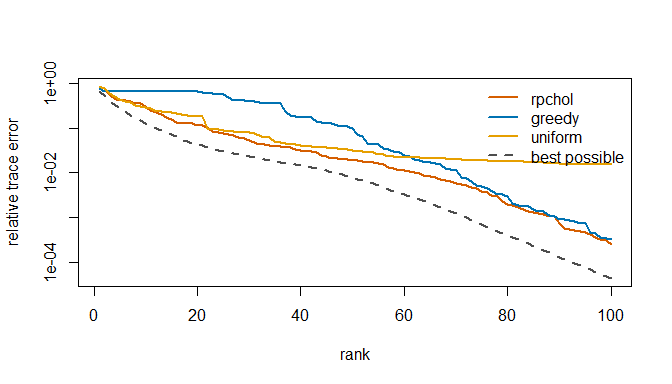

matsketch answers questions about a large positive-semidefinite matrix, such as a kernel matrix, a genomic relationship matrix or a covariance matrix, while reading only a small part of it. It implements recent randomized algorithms from numerical linear algebra that had no R implementation:
-
rpchol(): randomly pivoted Cholesky, which builds a near-optimal low-rank approximation from about of the matrix’s entries (Chen, Epperly, Tropp and Webber, 2025), with the accelerated rejection-sampling variant (Epperly, Tropp and Webber, 2025). -
trace_est()anddiag_est(): the XTrace, XNysTrace and XDiag estimators, which recover a trace or diagonal from a few matrix-vector products (Epperly, Tropp and Webber, 2024), with Hutch++ and Girard-Hutchinson for comparison. -
nystrom_precond()andpcg(): randomized Nyström preconditioning for conjugate gradients (Frangella, Tropp and Udell, 2023). -
reml_sketch(): all three combined into REML for genomic variance components that never forms the covariance matrix, and withgrm_matrix()never forms the relationship matrix either.
Each estimator is tested against a brute-force version of its definition.
Installation
Install the development version from GitHub:
# install.packages("pak")
pak::pak("mqfarooqi1/matsketch")Example
A Gaussian kernel on 1,500 points in two clusters with a few outliers. kernel_matrix() stores only the points, and rpchol() reads the entries it needs:
library(matsketch)
set.seed(1)
X <- rbind(matrix(rnorm(2 * 1300, sd = 0.5), ncol = 2),
matrix(rnorm(2 * 180, sd = 0.2), ncol = 2) + 4,
matrix(runif(2 * 20, -6, 10), ncol = 2))
K <- kernel_matrix(X, bandwidth = 0.5)
fit <- rpchol(K, k = 100)
fit
#> <rpchol> rank-100 approximation of a 1500 x 1500 matrix (accelerated)
#> relative trace error : 2.495e-04
#> entries read : 152,900 of 2,250,000 (6.80%)Against the classical rules at the same budget, and the best possible error at each rank:

The trace of a matrix known only through products:
U <- qr.Q(qr(matrix(rnorm(500 * 500), 500)))
A <- U %*% ((1:500)^-2 * t(U))
c(truth = sum(diag(A)),
xtrace = trace_est(A, m = 60)$estimate,
hutchinson = trace_est(A, m = 60, method = "hutchinson")$estimate)
#> truth xtrace hutchinson
#> 1.642936 1.643178 1.637572Genomic REML with the relationship matrix never formed:
dat <- sim_genomic(n = 1000, p = 2000, h2 = 0.5, pops = 4)
reml_sketch(dat$y, grm_matrix(dat$M))
#> <reml_sketch> converged in 3 iterations (rpchol rank-100 preconditioner, XTrace with 40 products)
#> estimate std.error
#> genetic 0.4238 0.0664
#> residual 0.5275 0.0541
#> h2 0.4455 0.0599
#> linear systems solved : 136 (mean 8.6 CG iterations)Learn more
- Randomized matrix computations with matsketch runs each method on a problem where its advantage is easy to see.
- Genomic REML without forming the covariance matrix explains the REML fit and measures its accuracy and scaling against exact REML.
References
Chen, Y., Epperly, E. N., Tropp, J. A. and Webber, R. J. (2025). Randomly pivoted Cholesky: practical approximation of a kernel matrix with few entry evaluations. Communications on Pure and Applied Mathematics 78, 995–1041. doi:10.1002/cpa.22234
Epperly, E. N., Tropp, J. A. and Webber, R. J. (2024). XTrace: making the most of every sample in stochastic trace estimation. SIAM Journal on Matrix Analysis and Applications 45, 1–23. doi:10.1137/23m1548323
Epperly, E. N., Tropp, J. A. and Webber, R. J. (2025). Embrace rejection: kernel matrix approximation by accelerated randomly pivoted Cholesky. SIAM Journal on Matrix Analysis and Applications 46, 2527–2557. doi:10.1137/24m1699048
Frangella, Z., Tropp, J. A. and Udell, M. (2023). Randomized Nyström preconditioning. SIAM Journal on Matrix Analysis and Applications 44, 718–752. doi:10.1137/21m1466244
To cite matsketch itself, run citation("matsketch").